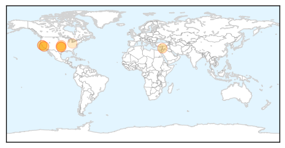
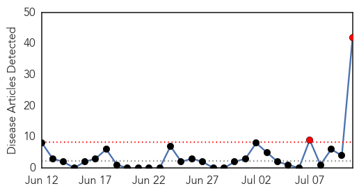
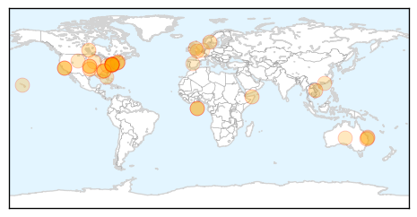
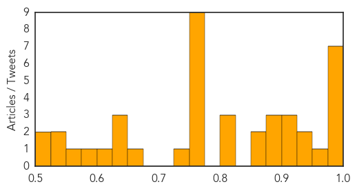

West Nile Virus
30-Day Web Trend
6 alerts, 8 warnings

30-Day Twitter Trend
0 alerts, 0 warnings

Article Locations
Article Confidences

Top Articles:
- 0.968
- First case of West Nile Virus found in Suffolk County this summer
- 0.961
- Maine towns on lookout for signs of mosquito-borne viruses
- 0.954
- West Nile Virus is alarming example of climate change’s effects
- 0.925
- West Nile Virus Found in Dead Birds in Contra Costa County...
- 0.920
- Oklahoma's first confirmed West Nile case is Major County resident
- 0.830
- West Nile's record season has residents concerned about fogging
- 0.812
- West Nile found in Oklahoma
- 0.797
- West Nile's record season has Bay Area residents concerned about fogging
- 0.696
- Prevalence of infectious diseases up in Okla.
- 0.679
- 27 Investigates: Peak of summer brings mosquito concerns
Top Tweets:
-
No tweets found for Jul 11, 2014
Influenza
30-Day Web Trend
2 alerts, 0 warnings

30-Day Twitter Trend
4 alerts, 0 warnings
Article Locations
Article Confidences
Top Articles:
- 1.000
- Saskatchewan's Unusual Flu Season At Turning Point, Health Officials Say
- 0.999
- With Chinese New Year H7N9 cases soar, but experts struggle to assess the risk
- 0.998
- You May Be Better Off Without a Flu Shot
- 0.996
- Don't Believe Everything You Read About Flu Deaths
- 0.985
- Smallpox and related pox viruses could still cause disease.
- 0.984
- Could It Strike Again?
- 0.979
- Flu Deaths In Saskatchewan Hit 16, Surpass Pandemic Year
- 0.973
- NIH docs squirt flu virus up the noses of volunteers willing to sneeze for science
- 0.942
- Experts monitoring increased bird flu cases in China ahead of mass Lunar New Year exodus
- 0.936
- Saskatchewan implements flu shot or surgical mask policy for health-care workers
- 0.923
- CDC says it improperly sent dangerous pathogens in five incidents in past decade
- 0.923
- CDC says it improperly sent dangerous pathogens in five incidents in past decade
- 0.920
- Otters Aren't Just Adorable, They Matter to Human Health
- 0.900
- Safety breaches force CDC to shutter 2 laboratories
- 0.876
- Ministers Spent £500m On 'Toxic' Flu Drug That's Totally 'Useless'
- 0.875
- US Government Laboratory Mixed up Potent Flu Strain
- 0.875
- There Is No Risk For Humans From Pig Virus, Says Wynne
- 0.853
- US lab mixed up potent flu strain
- 0.808
- Flu shots cut risk of heart attacks
- 0.808
- Flu shots cut risk of heart attacks
- 0.808
- Flu shots cut risk of heart attacks
- 0.775
- Feds Tighten Lab Security After Anthrax, Bird Flu Blunders
- 0.775
- Feds Tighten Lab Security After Anthrax, Bird Flu Blunders
- 0.775
- Feds Tighten Lab Security After Anthrax, Bird Flu Blunders
- 0.775
- Feds Tighten Lab Security After Anthrax, Bird Flu Blunders
- 0.775
- Feds Tighten Lab Security After Anthrax, Bird Flu Blunders
- 0.775
- Feds Tighten Lab Security After Anthrax, Bird Flu Blunders
- 0.775
- Feds Tighten Lab Security After Anthrax, Bird Flu Blunders
- 0.775
- Feds Tighten Lab Security After Anthrax, Bird Flu Blunders
- 0.751
- Anthrax probe reveals new safety lapse at CDC
- 0.748
- Flu shot can halve heart attack risk
- 0.664
- Scientists Recreate Deadly Spanish Flu Virus, No One's Really Sure Why
- 0.649
- U.S. anthrax probe reveals new bird flu mishap, widespread safety lapses
- 0.648
- UPDATE 3-U.S. anthrax probe reveals new bird flu mishap, widespread safety lapses
- 0.639
- CDC increases regulations after anthrax, smallpox scares
- 0.622
- Inquiry into US government labs finds flu virus cross-contamination
- 0.595
- US anthrax probe reveals new bird flu mishap amid widespread safety lapses
- 0.561
- Five changes can make H5N1 bird flu virus transmit among mammals, study finds
- 0.532
- CDC outlines 5 incidents in which deadly pathogens were mishandled
- 0.529
- CDC grapples with lab safety lapses
- 0.522
- Widespread Safety Issues Uncovered at CDC Labs
- 0.518
- CORRECTED-UPDATE 1-U.S. anthrax probe reveals new bird flu mishap, widespread safety lapses
Top Tweets:
- 0.587
- Utility of snout wipe samples for influenza A virus surveillance in exhibition swine populations http://t.co/hvxp1dnOF3